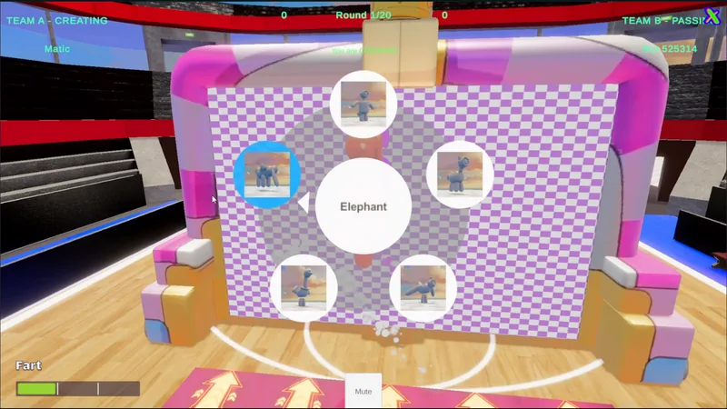
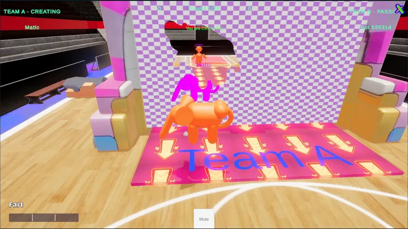
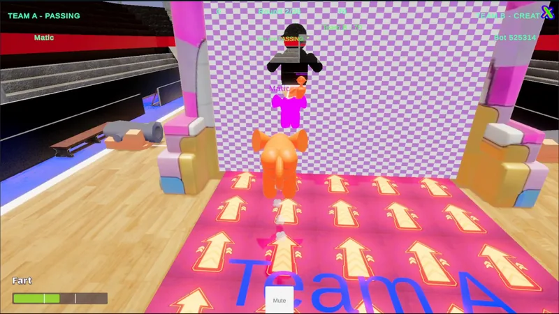
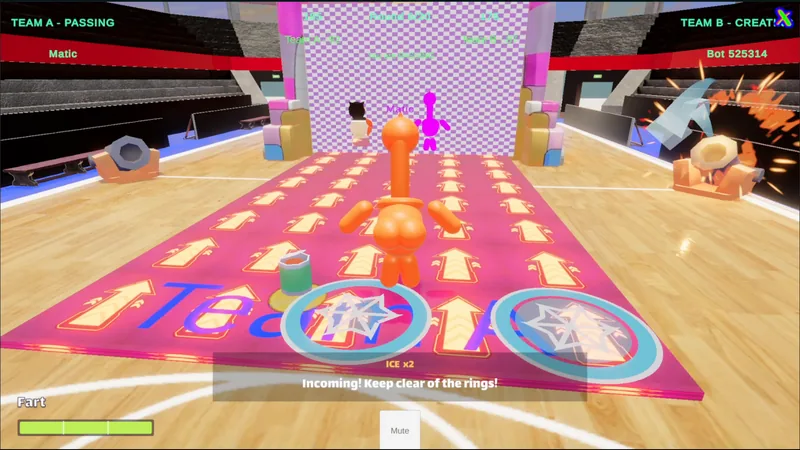
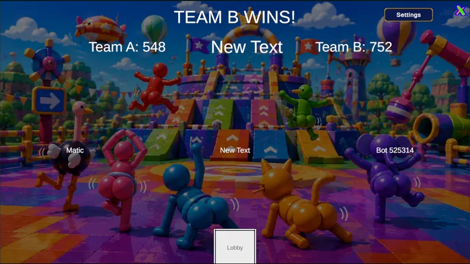

Work Move Your Butt
Move Your Butt
An online team party game where the holes in the wall are made by the players.
What the video shows
66-second gameplay overview: a balloon-animal character poses and pushes into a checkered wall to carve a shape, then passes through an opening carved by the other team, avoids cannon volleys and collects food cans; ends on the 20-round result screen.
- My role
- Developer, one of two. I built most of the game's systems across gameplay, networking, bots and tools.
- Team
- 4 people: two developers (including me), a UI/UX designer and a 3D modeller
- Organisation
- RoA Interactive (independent development team)
- Year
- 2026
- Status
- In development
- Engine
- Unity 6 (URP) · C#
- Platform
- PC, online multiplayer
- Built with
The experience
Two teams take turns. The creating team picks a pose from a radial menu and walks their balloon-animal character into a wall as it rises and starts to move, punching their silhouette through it. Once the wall passes its midpoint the opening is frozen, and the passing team has to squeeze through the shape the other team made. Points go to the passers for the share of their body that fits inside the opening.
A match is twenty rounds, and the wall speeds up from 0.6× to 2.5× of its base speed along the way. Teams can be one to four players a side; empty seats are filled by bots, which is what the capture above shows.
Two layers sit on top of the core loop. Each round, food cans land on every team's mat; eating one refuels the jump meter, which pays for launches and for holding jump in the air. From round three, cannons lob shells at the passing team while the wall approaches: a ring warns where each shell will land, a blast shoves the player off position, and ice freezes them in place so they can't change pose.
My work
I'm one of the two developers on Move Your Butt at RoA Interactive, working with a UI/UX designer and a 3D modeller, and I built most of the game's systems. That includes the round loop and match flow on Photon Fusion, wall carving and scoring, the jump fuel and food pickup protocol, the cannon volleys, the bot planner, and the lobby, Quick Match and party flow built on Unity Gaming Services and Vivox. I also set the pattern the codebase follows: game rules written as plain, engine-free structs behind thin networked adaptors, so editor tests run the same code the game does.
Most of the engineering effort goes into making a game without a dedicated server behave fairly. That means deciding which peer is allowed to decide what, making every decision safe to receive twice, and cancelling an action rather than guessing when timing can't be trusted. The sections below show how those ideas work in the round loop, the wall, food and fuel, the cannons and the bots.
How it works
The game runs on Photon Fusion 2 in shared mode: there is no dedicated server, and each client owns its own character. Fairness comes from giving one peer the job of refereeing. The RoundManager object's state authority runs the round loop, and the systems that must be fair, food and cannons, live as components on that same network object so they share its authority and its tick.
- Round startsRound authority opens scoring for the passing team, places food and plans the cannon volley.
- Wall rises and travelsEach client runs the wall locally from a start message; speed scales with the round number.
- Creators carveBody shapes are punched into a 512×512 wall mask; the opening freezes at the midpoint.
- Passers fit throughThe score is the share of each passer's carved cells that lie inside the opening.
- Round endsLeftover food and unfired shells are cleared, the score is accepted once, and the teams swap roles.
One grid for everything. The wall is a 512×512 mask on an 18 m × 12 m quad. The same grid is the visible hole, the collision truth and the scoring domain, so what a player sees through the wall is exactly what is scored. Scores carry the match attempt, round and team they belong to, and each can be accepted only once, so a late or duplicated message cannot change a result.
Food as a small protocol. A can is not simply "touched". The collecting client asks for it, the round authority grants requests in roster order after checking reach, team, round and fuel, the collector adds the fuel to its own tank and reports back, and the authority either consumes the can or re-issues it under a new serial number if the player was already full. How many cans a team gets depends on the score: one more than the team size when level, one fewer when leading, two more when trailing, decided once for each pair of rounds so the uneven mid-pair score can't swing it.
Cannons that respect the wall. The volley is planned from the wall's own timing. Shells land only after the creators are clear and before the wall reaches the passers, each landing spot has to be escapable on foot in the warning time, and the arc is the lowest one that clears the moving wall. If no safe arc or timing exists, the volley is cancelled rather than fired at a guess. Whether a shell hits is decided by the target's own client, consistent with shared mode.
Bots that plan. A bot reads its role, generates candidate poses and positions, predicts which wall cells each would carve, and scores them against what its teammates intend. It then commits to one action per tick: travel, align, face or jump. It also dodges cannon rings and fetches food when it needs fuel.
Rules kept out of the engine. Decision logic for jumps, fuel, food allocation and cannon schedules is written as plain structs with no Fusion types in them. The networked behaviours are thin adaptors around those rules, which lets editor tests drive the same code the game runs.
Decisions that shaped it
One referee instead of a server. Shared mode keeps hosting simple and lets anyone start a match, but it means fairness has to be designed in. Putting the round loop, food and cannons on one authority object gives a single place where grants and schedules are decided, and the attempt and serial numbers make every decision idempotent.
Cancel rather than cheat. Because each client runs the wall from a message, walls can start at slightly different moments on different machines. The cannon plan re-checks the real start time against its projection and drops any shell that would no longer be safe. A missing volley is better than one that passes through the wall.
Uneven rewards on purpose. Giving the trailing team more food is a quiet catch-up mechanic. Deciding it per pair of rounds means it reacts to the match, not to the half-finished score in the middle of a role swap.
Next steps
- Run two-machine playtests. The game is built for multiple clients; the footage here is one player against a bot-filled team. Measure how closely each client's wall start matches the 0.3 s allowance the cannon planner works to.
- Tune through play. Cannon and fuel values are first-pass numbers, set up to be adjusted in playtests.
- Evaluate authority-side hit checks for public matchmaking. Hits are currently decided on the target's own client, which suits private matches with friends. For public matchmaking, assess moving that check to the round authority.
- Finish the results screen. Replace the "New Text" development label visible in the footage during the next UI pass.
Screens
-

Radial pose menu in front of the approaching wall. -

The creator's pose carves an opening into the moving wall. -

A passer lines up with the opening the other team carved. -

A cannon volley: warning rings and the prompt 'Incoming! Keep clear of the rings!'. -

Result screen after 20 rounds (one player against a bot-filled team in this capture).